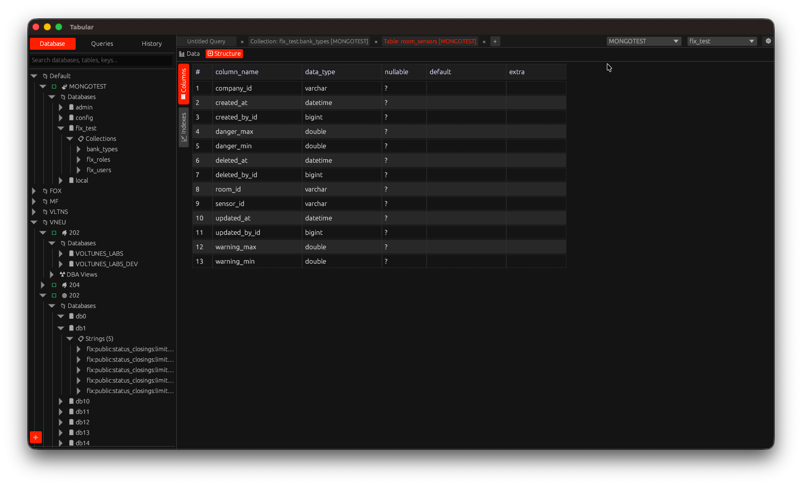

The SQL & NoSQL client that stays out of your way.
A native, distraction-free database GUI for MySQL, PostgreSQL, SQLite, SQL Server, MongoDB & Redis — with zero-knowledge encrypted cloud sync and team collaboration built in, not bolted on.

Everything a DBA or developer actually needs
No bloat, no Electron overhead — just a fast native client that covers the whole daily workflow.
Core Editor
Native performance
A single native binary built in Rust with egui — instant startup, low memory footprint, no Chromium/Electron runtime dragging things down.
Clean & focused
We'd rather do the essential things well than bolt on features nobody uses.
Query Safety Guard
Flags UPDATE / DELETE statements missing a WHERE clause before they run, so a stray query can't wipe a table by accident.
Visual ER diagrams
Pan & zoom entity‑relationship view generated straight from your schema.
Inline editing & export
Edit cells directly in the grid (with a native date/time picker), copy a cell/row/result set, or export straight to CSV & XLSX. Connections can be grouped into drag‑and‑drop folders.
Cloud & Teams
Zero‑knowledge encrypted sync
Connections, saved queries and history sync across your devices via tabular-server — encrypted client‑side with AES‑256‑GCM before they ever leave your machine. The server only ever stores ciphertext.
How the encryption worksTeams & shared vault
Share connections with a team via role‑based access — owner, editor, viewer — without ever exposing plaintext credentials to the server.
Sign in with Google or GitHub
OAuth2 login with short‑lived JWT access tokens and secure refresh‑token rotation.
Realtime collaborative editing Beta
Multiple people editing the same query with live cursors, powered by CRDTs (yrs, the Rust port of Yjs) over WebSockets.
Power Tools
AI Assistant
Schema‑aware query help right in the editor (⌘/Ctrl+Shift+A). Bring your own key — OpenAI, Anthropic, Groq, GitHub Models, or any OpenAI‑compatible endpoint.
Redis Browser
Dedicated visual key explorer with type filters, full‑text key search, TTL/size preview, and automatic standalone/cluster detection.
Built‑in HTTP client
A REST panel sits right next to your SQL results — Bearer/Basic/API‑key auth, JSON/form bodies, and paste‑a‑curl‑command‑to‑fill‑it‑in import.
SSH tunneling
Reach databases that only listen on localhost behind a bastion host, with tunnels managed automatically per connection.
Keyboard‑first
A shortcut for nearly everything, so your hands never have to leave the keyboard.
Self‑update & quick support
Checks GitHub Releases for new versions automatically; the community & maintainers help troubleshoot on GitHub.
We designed cloud sync so we can't read your data.
Tabular Server (Rust + Axum + MySQL) exists to sync your workspace across devices and teams — not to see inside it.
1. Encrypt on your device
Connection credentials are encrypted locally with AES‑256‑GCM before anything is sent.
2. Only ciphertext travels
The wire and the database both only ever see an opaque encrypted blob.
3. Zero‑knowledge storage
Server operators cannot decrypt your credentials — even we can't read them.
One client, six real drivers
Relational and non‑relational, all in the same familiar UI.

MySQL / MariaDB

PostgreSQL

SQLite

SQL Server

MongoDB

Redis
More drivers are on the roadmap — the query engine's dialect layer was built to make adding new databases straightforward.
See Tabular in action
Effortless data exploration
Run a query and see the result grid update in real time, with the full column list and types alongside it.

Connect in seconds
Enter host, credentials and database type once — Tabular caches the connection for instant reconnects afterwards.

Saved queries, organized
Keep ready‑to‑run SQL files organized into folders, synced to your account across devices.

Quick actions on your data
Right‑click a cell or row to copy it, copy as CSV, or export the result set straight to CSV/XLSX.

One tree for every connection
MySQL, MongoDB and Redis connections side by side in the same sidebar — no context switching between apps.
Get Tabular
Free to use under AGPL‑3.0 — a commercial license is available for closed‑source integration.

macOS
Universal binary (Intel & Apple Silicon), notarized .dmg

Linux
x86_64 & aarch64 .tar.gz, plus Arch & Flatpak builds

Windows
x86_64 & aarch64 builds
iPadOS Experimental
Early groundwork exists — build from source with the iOS target, no prebuilt release yet